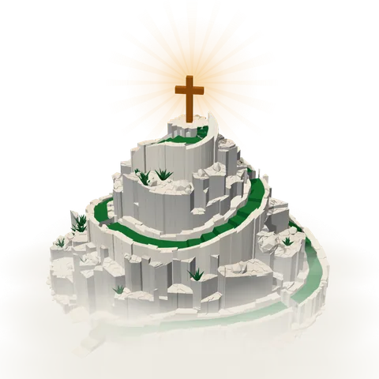
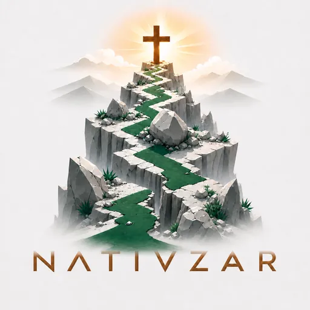
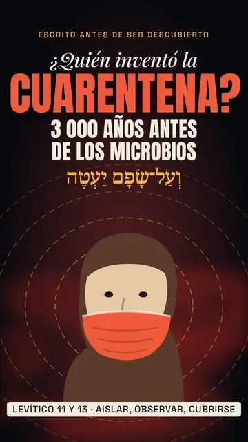
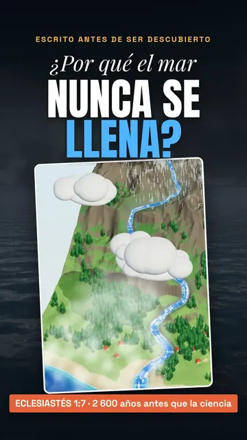
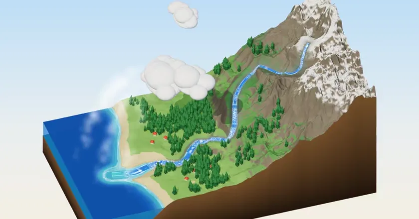
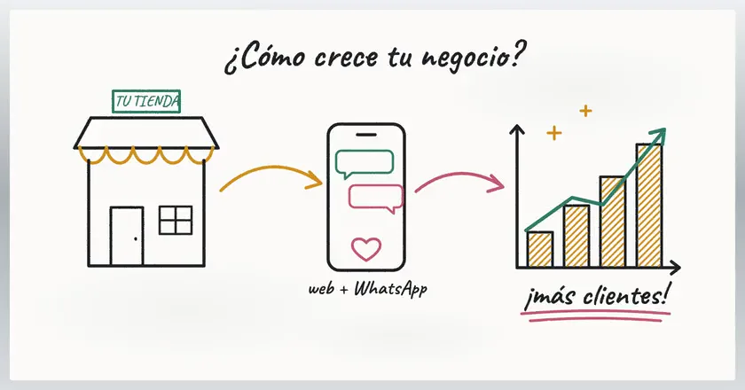
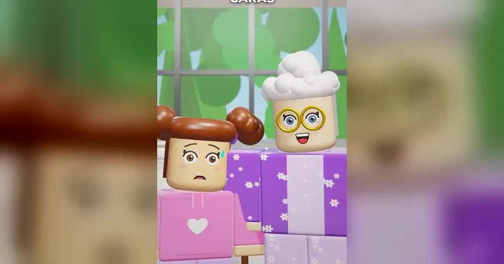

Afiches de especialidades
Serie para clubes de Conquistadores: un mismo sistema (título grande, emblema al centro, fecha en placa) que cambia de textura según el tema. Toca un afiche para verlo grande.
Camino 01
Diseño gráfico, branding, edición de video y motion graphics: afiches, escudos y uniformes para la iglesia, identidades y logos 3D para marcas, y Shorts que comparten el Mensaje. Uso la IA generativa como parte del taller y termino cada pieza con criterio de diseño.
Diseño gráfico y branding
Jerarquía clara, contraste que se lee en un celular y una paleta que se repite en todo: así diseño afiches para eventos, identidades completas y logos que también viven en 3D.
Serie para clubes de Conquistadores: un mismo sistema (título grande, emblema al centro, fecha en placa) que cambia de textura según el tema. Toca un afiche para verlo grande.
Logo >e:, paleta verde y dorada, tipografía, íconos y banners para redes y GitHub.


El logo oficial (abajo a la izquierda) convertido en una montaña 3D con Three.js. Arrástrala para verla por todos lados.

Cada formato con su propia composición, no un recorte del anterior.
Para la iglesia · Conquistadores y Ministerio Joven, MBON
Diseño con un agente que conoce los emblemas, pañoletas y uniformes oficiales, y que repara los símbolos cuando la IA los deforma. Así una serie entera sale coherente y fiel a la identidad del club.
Insignias para cursos y campamentos, pensadas para bordarse: pocos colores, borde grueso y texto que se lee a 8 cm.
Excursiones, recepciones, celebraciones y cursos, listos para WhatsApp el mismo día: fecha, hora y lugar primero.
«Trazo andino», para coordinadores de la MBON en el VI Camporí Sudamericano: la cordillera y el Illimani como franja, con el lago y la canoa al frente. Y la polera del Club Central, con plumas y el león del club. Desliza para ver cada una.
Edición de video y motion graphics
Escribo el guion, grabo o genero la voz, edito, animo y subtitulo. La serie «Escrito antes de ser descubierto» del canal Nativzar ya tiene siete capítulos.
 Cap. 7 · NuevoDijeron que Salomón se equivocó con las hormigasProverbios 6:6–8 · 2:55
(abre YouTube)
Cap. 7 · NuevoDijeron que Salomón se equivocó con las hormigasProverbios 6:6–8 · 2:55
(abre YouTube) Cap. 6¿Curar sacando sangre?Levítico 17:11 · 2:51
(abre YouTube)
Cap. 6¿Curar sacando sangre?Levítico 17:11 · 2:51
(abre YouTube)
Cap. 4¿Quién inventó la cuarentena?Levítico 13 · 1:46 (abre YouTube) Cap. 3¿Senderos dentro del mar?Salmos 8:8 · 1:36
(abre YouTube)
Cap. 3¿Senderos dentro del mar?Salmos 8:8 · 1:36
(abre YouTube) Cap. 2Agua Viva: el secreto de la higieneLevítico 15:13 · 1:30
(abre YouTube)
Cap. 2Agua Viva: el secreto de la higieneLevítico 15:13 · 1:30
(abre YouTube)
Cap. 1¿Por qué el mar nunca se llena?Eclesiastés 1:7 · 1:41 (abre YouTube) ReflexiónEl camino de la vidaMateo 7:13–14 · 0:53
(abre YouTube)
ReflexiónEl camino de la vidaMateo 7:13–14 · 0:53
(abre YouTube)En Kauxte ofrezco diez estilos de video que armo por código, con Remotion y Three.js, y con agentes de IA: recortes editoriales, capturas de apps en 3D, mundos isométricos, pizarrón a mano y más.
 Docu Cut
Docu Cut Producto en vivo
Producto en vivo
Mundo 3D isométrico
Pizarrón vivo
Mundo de bloques Ilustración animada
Ilustración animadaRetoque y composición fotográfica
No solo recorto: integro personas y objetos reales a un diseño con la misma luz, color y sombra, y dejo cada pieza lista para imprimir, para miniatura o para una web liviana.
IA generativa
Uso la IA como parte del taller, no como atajo: genero bocetos, voces y tomas, y después elijo, corrijo y termino cada pieza con criterio de diseño.

Personajes e ilustraciones con generadores de imagen, corregidos hasta respetar cada detalle del uniforme y los emblemas.
Tomas cinematográficas con Higgsfield y animación por código con Remotion.
Narraciones con ElevenLabs, voz clonada propia y limpieza de audio.
Creé AI_design_7thday, skills que le enseñan a la IA qué emblema, pañoleta y colores van en cada afiche de Conquistadores, Aventureros y Guías Mayores. Cómo está hecho
Ahora mismo
Quiero pasar del boceto al diseño de interfaz con un sistema ordenado antes de programarlo. Estoy practicando:
Herramientas
Contacto
Piezas para tu iglesia, tu club o tu marca, y videos para redes. Cuéntame qué necesitas y te respondo con una propuesta clara.
¿También necesitas un sitio, una app o un agente? Ver software e IA